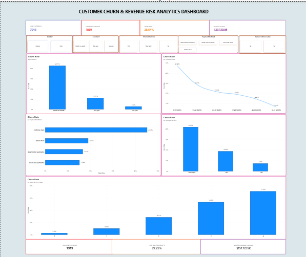

An end-to-end Data Analytics project using Python and Power BI to analyze customer churn, identify high-risk customers, and measure revenue exposure.

Total Customers
Churned Customers
Overall Churn Rate
Monthly Revenue at Risk
High-Risk Customers
Monthly Revenue Exposure
Python | Pandas | NumPy | Matplotlib | Jupyter Notebook | Power BI | DAX | Git | GitHub